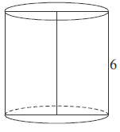
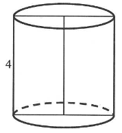
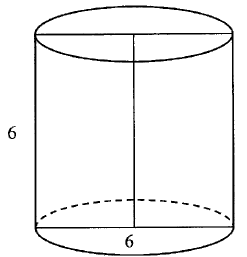

Walec
Walec powstaje w wyniku obrotu dowolnego prostokąta
wokół prostej zawierającej jeden z jego boków.

Powyższy walec powstał przez obrót prostokąta \(SBCE\) wokół prostej \(SE\).
Przekrojem osiowym walca jest prostokąt \(ABCD\).
Podstawą walca jest koło.
Wzór
na pole podstawy walca: \[P_p=\pi r^2\] Wzór na pole powierzchni bocznej walca: \[P_b=2\pi rh\] Wzór na
pole powierzchni całkowitej walca: \[P_c=2P_p+P_b=2\pi r^2+2\pi rh=2\pi r(r+h)\] Wzór na objętość walca:
\[V=P_p\cdot h=\pi r^2h\]
Przekrojem osiowym walca jest prostokąt \(ABCD\).
Podstawą walca jest koło.
Pole powierzchni bocznej walca, którego podstawa ma średnicę \(4\) jest równe
\(8\pi \). Wysokość tego walca jest równa
A.\( 8 \)
B.\( 4 \)
C.\( 2 \)
D.\( \frac{1}{2} \)
C
Przekrój osiowy walca jest kwadratem o boku \(a\). Jeżeli \(r\) oznacza promień
podstawy walca, \(h\) oznacza wysokość walca, to
A.\( r+h=a \)
B.\( h-r=\frac{a}{2} \)
C.\( r-h=\frac{a}{2} \)
D.\( r^2+h^2=a^2 \)
B
Przekrój osiowy walca jest kwadratem o boku długości \(6\). Objętość tego walca
jest równa 
A.\( 18\pi \)
B.\( 54\pi \)
C.\( 108\pi \)
D.\( 216\pi \)
B
Objętość walca o wysokości \(8\) jest równa \(72\pi\). Promień podstawy tego walca
jest równy
A.\( 9 \)
B.\( 8 \)
C.\( 6 \)
D.\( 3 \)
D
Objętość walca, w którym wysokość jest trzykrotnie dłuższa od promienia podstawy,
jest równa \( 24\pi \). Zatem promień podstawy tego walca ma długość
A.\(4 \)
B.\(8 \)
C.\(2 \)
D.\(6 \)
C
Pole powierzchni całkowitej walca, którego przekrojem osiowym jest kwadrat o boku
długości \( 4 \), jest równe 
A.\(256\pi \)
B.\(128\pi \)
C.\(48\pi \)
D.\(24\pi \)
D
Prostokąt o bokach długości \(2\) i \(4\) obracamy wokół krótszego boku. Ile wynosi
pole powierzchni całkowitej tak otrzymanej bryły?
A.\( 16\pi \)
B.\( 24\pi \)
C.\( 32\pi \)
D.\( 48\pi \)
D
Przekątna przekroju osiowego walca, którego promień podstawy jest równy \(4\) i
wysokość jest równa \(6,\) ma długość
A.\( \sqrt{10} \)
B.\( \sqrt{20} \)
C.\( \sqrt{52} \)
D.\( 10 \)
D
Dany jest walec, w którym promień podstawy jest równy \(r\), a wysokość walca jest
od tego promienia dwa razy większa. Objętość tego walca jest równa
A.\( 2\pi r^3 \)
B.\( 4\pi r^3 \)
C.\( \pi r^2(r+2) \)
D.\( \pi r^2(r-2) \)
A
Dany jest walec, w którym wysokość jest równa promieniowi podstawy. Objętość tego
walca jest równa \(27\pi\). Wynika stąd, że promień podstawy tego walca jest równy
A.\( 9 \)
B.\( 6 \)
C.\( 3 \)
D.\( 2 \)
C
Przekrój osiowy walca jest kwadratem o boku długości \(6\). Objętość tego walca
jest równa 
A.\( 108\pi \)
B.\( 54\pi \)
C.\( 36\pi \)
D.\( 27\pi \)
B
Promień \(AS\) podstawy walca jest równy wysokości \(OS\) tego walca. Sinus kąta
\(OAS\) (zobacz rysunek) jest równy 
A.\( \frac{1}{2} \)
B.\( \frac{\sqrt{2}}{2} \)
C.\( \frac{\sqrt{3}}{2} \)
D.\( 1 \)
B
Pole powierzchni bocznej walca jest równe \(16\pi\), a promień jego podstawy ma
długość \(2\). Wysokość tego walca jest równa
A.\( 4 \)
B.\( 8 \)
C.\( 4\pi \)
D.\( 8\pi \)
A
Przekrój osiowy walca jest kwadratem o przekątnej \(10\sqrt{2}\). Pole powierzchni
bocznej tego walca jest równe
A.\( 50\pi \)
B.\( 100\pi \)
C.\( 200\pi \)
D.\( 250\pi \)
B
Przekrojem osiowym walca jest kwadrat o przekątnej długości \(12\). Objętość tego
walca jest zatem równa
A.\( 36\pi\sqrt{2} \)
B.\( 108\pi\sqrt{2} \)
C.\( 54\pi \)
D.\( 108\pi \)
Przekątna przekroju osiowego walca jest równa \(4\). Przekątna ta tworzy z bokiem
odpowiadającym wysokości kąt \(30^\circ \). Objętość walca wynosi
A.\( 2\sqrt{3}\pi \)
B.\( 3\sqrt{2}\pi \)
C.\( 8\sqrt{3}\pi \)
D.\( \frac{8\sqrt{3}\pi}{3} \)
A
Przekątna przekroju osiowego walca jest równa \(12\ \text{cm}\). Przekątna ta
tworzy z bokiem odpowiadającym wysokości kąt \(36^\circ \). Oblicz pole powierzchni całkowitej i
objętość bryły.